Designing VeVe's Comics Curator
How I built a self-serve publishing platform that scaled VeVe from 3 publishers to 17
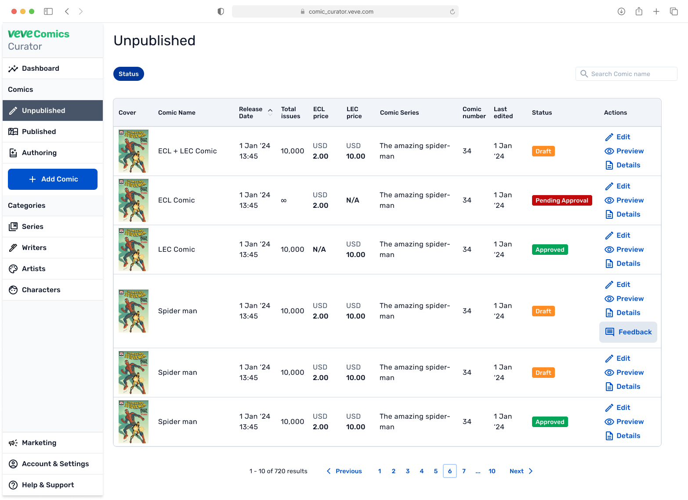
Impact
Context
VeVe is the world's largest mobile-first digital comics and collectibles platform. Over 10 million comic transactions. Partnerships with Marvel, Disney, DC, and more.
Every single comic was processed manually by VeVe's ops team through a tool that was barely holding together.
The tool was fragmented. Comic details lived in one database table. Page uploads in another. Covers in a third. The Authoring tool for panel separation ran through a completely separate interface. Creating one comic meant jumping across four disconnected screens and manually linking records between them.
Publishers had zero access. Everything went through ops via email. A single comic required 17 touchpoints from first email to going live.
This worked with 3 major publishers shipping about 35 comics a month. The business had signed new partners, the ops team was already at capacity, and the mandate was clear: scale to 10+ publishers without scaling headcount.
My job was to redesign everything. Unify the fragmented tool into a coherent platform publishers could use directly. I named it the Comics Curator. I owned the entire design process — research, IA, interaction design, visual design, design system, testing collaboration, and developer handoff.
Discovery
Ops Shadowing (1 Day)
I sat with the ops team for a full day watching them process comics in real time. I wanted to see the unfiltered reality before anyone had a chance to rationalize the workflow.
What I found:
- Every comic touched 17 touchpoints across email, Slack, Google Sheets, and the tool's scattered screens.
- 23% of comics had metadata errors caught only at QA.
- Digital Comic and NFT Comic pricing was entered separately with no validation, and ops mixed them up on 12% of comics.
- When publishers sent updated pages (about 30% of uploads), ops had to manually find changes across disconnected tables because there was no version control.
One moment shaped my entire approach. I watched a coordinator spend 22 minutes entering metadata from a publisher's email. Halfway through 14 fields, she found a typo in the issue number. She deleted everything and started over. That became my core principle: the system must prevent errors at input.
I documented the full workflow as a service blueprint that became my reference for every decision after.
Publisher Interviews (5 Interviews, 3 Publishers)
The researcher helped with recruiting and scripting. I led the interviews and synthesized findings using a jobs-to-be-done framework.
Three quotes that directly shaped the product:
"We have every piece of metadata in our spreadsheets. If you let us upload that, we'd save hours every week."
— Digital ops coordinator. This led to the Excel import feature.
"I need my editors to upload drafts, but I don't want them pushing anything live."
— Publisher ops manager. This defined the approval workflow.
"We manage hundreds of characters and series. If I can't search and link them to comics, I'm just building another spreadsheet."
— Content lead. This led to the Categories module.
Support Ticket Analysis (200+ Tickets)
I pulled six months of publisher-related tickets.
- 34% — Metadata corrections
- 27% — "Where's my comic?" status inquiries
- 19% — File format issues
- 12% — Page errors from manual processing
- 8% — Permission requests
61% of all tickets were preventable through better UX. When the engineering lead later questioned whether inline validation was worth building, I showed him the 34% number. That conversation lasted 30 seconds.
Design Principles
Each one traces back to a specific research finding.
- One comic, one place. Details, files, covers, metadata all unified in a single view. Derived from ops shadowing where fragmented tables forced manual cross-referencing.
- Import, don't retype. If it lives in a spreadsheet, upload the spreadsheet. Derived from publisher interviews and the 23% error rate caused by manual entry.
- Error prevention at input. Catch problems when data enters the system. Derived from the 22-minute rework I watched on day one.
- Connected catalog. Series, writers, artists, and characters as linked entities with a single source of truth. Derived from publishers managing hundreds of creators across thousands of comics.
- Controlled autonomy. Draft, review, and approval with clear roles. Derived from publisher needs and VeVe's internal quality control requirements.
Design Decisions
The Foundational Decision: Unifying the Flow
The highest-impact decision was structural.
The old tool stored comic details in one screen, page uploads in another, covers in a third, authoring in a fourth. Ops cross-referenced records manually to connect them.
I brought everything inside a single comic. Open a comic in the Curator and you see its details, pages, covers, metadata, status, and edit history in one view. The mental model became "I'm working on Spider-Man #47" — a single object containing everything related to it.
Information Architecture
The IA evolved through publisher interview feedback. Two decisions mattered most.
Comics (Unpublished, Published, Authoring) was the most-used section by far, so I placed it at the top with subsections always visible. Publishers constantly switch between these three views, and collapsing them behind a click would add friction to their most frequent action.
Categories (Series, Writers, Artists, Characters) got its own top-level section because publishers spend dedicated sessions managing their taxonomy independent of individual comics. A publisher might spend an entire afternoon cleaning up writer names or adding characters. That workflow deserved its own space. Categories acts as the source of truth for the entire catalog.
COMICS CURATOR ├── Dashboard ├── Comics │ ├── Unpublished (Draft / Pending Approval / Approved) │ ├── Published │ ├── Authoring (panel separation workspace) │ └── [+ Add Comic] ├── Categories (source of truth) │ ├── Series · Writers · Artists · Characters ├── Marketing ├── Account & Settings └── Help & Support
The sidebar ordering changed based on interview feedback. Comics moved to the top because 70%+ of publisher time goes there.
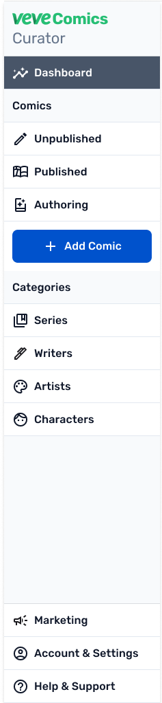
The Add/Edit Comic Flow: Three Steps
I replaced the fragmented multi-table experience with a three-step progressive disclosure flow.
Step 1: Details. All metadata in one form. Title, issue number, series (linked from Categories), creators (linked from Writers and Artists), description, and pricing.
The pricing design required careful thought. VeVe has two comic types. Digital Comics work like ebooks with unlimited supply. NFT Comics are limited quantity collectibles with rarity tiers — Common, Uncommon, Rare, Ultra Rare, and Secret Rare — each with its own cover variant.
I designed the form to branch on type selection. Pick NFT Comic and the rarity section expands with tier-specific fields for each cover and edition count. Pick Digital Comic and that section stays hidden. The old tool showed all fields simultaneously regardless of type, which caused constant confusion.
Inline validation catches errors in real time: duplicate issue numbers trigger a warning with a link to the existing comic; creator names get "did you mean" suggestions from the Categories database; pricing inversions show a soft warning; required fields flag before you can move to the next step.
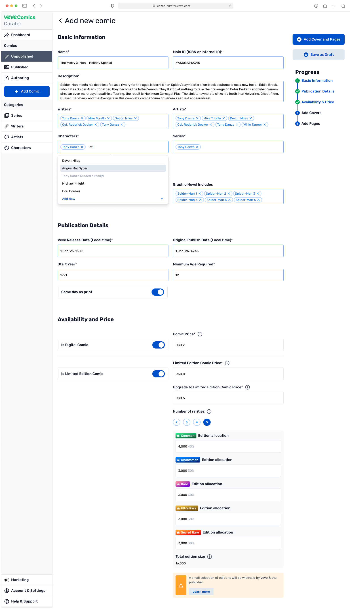
Step 1: Details — all metadata in one form, branching pricing for Digital vs NFT Comic types
Step 2: Import Pages. Upload as a full PDF (auto-split into pages) or individual images. Upload cover variants here too. In the old tool, files lived in a separate table. Here they're part of the comic itself.
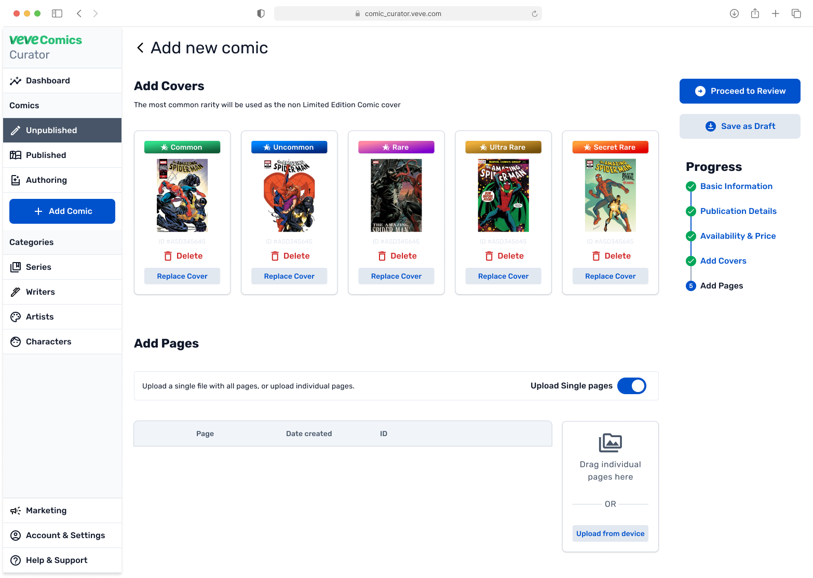
Step 2: Import — pages and cover variants unified inside the comic, no separate table
Step 3: Review. Summary of everything before submission. Go back to any step to edit, then submit. Submission moves the comic to Pending Approval status.
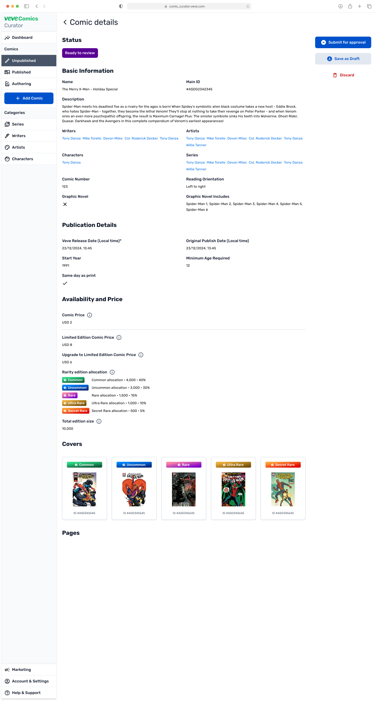
Step 3: Review — full summary before submission, replacing the old multi-screen cross-referencing
The Unpublished Page
This is where publishers spend most of their time. The table shows cover thumbnails for visual recognition, comic name, release date, total issues, Digital Comic price, NFT Comic price, series, comic number, last edited, status, and actions.
I gave Digital Comic and NFT Comic prices their own visible columns because the old tool stacked them in a layout that was easy to misread. Ops mixed them up on 12% of comics. Side-by-side columns let publishers scan and compare pricing across their entire catalog at a glance.
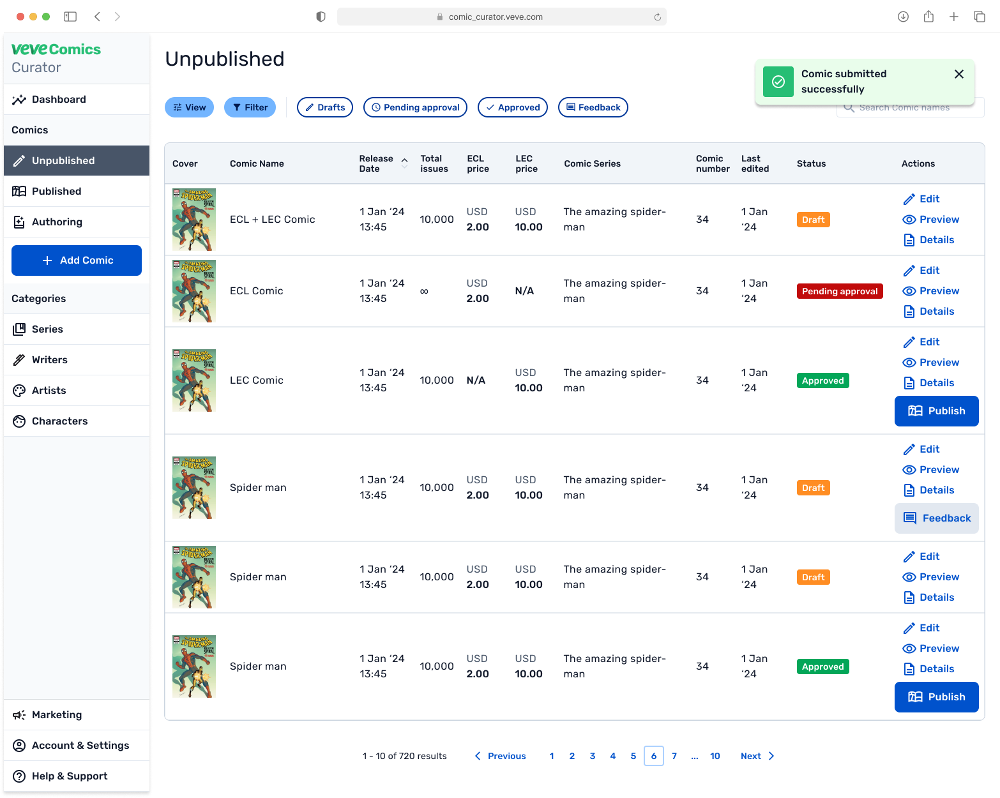
Unpublished page — status badges, dual pricing columns, and feedback action for in-tool review communication
The approval workflow serves VeVe's internal review process. Draft means the publisher is still working. Pending Approval means they've submitted and VeVe's team needs to review. Approved means it's cleared for publishing.
The Feedback button appears on comics that have received review notes from VeVe's internal team. It's a structured form that replaced the old email and Slack back-and-forth. Reviewers send change requests tied to the specific comic, and publishers can see which comics need attention instantly.
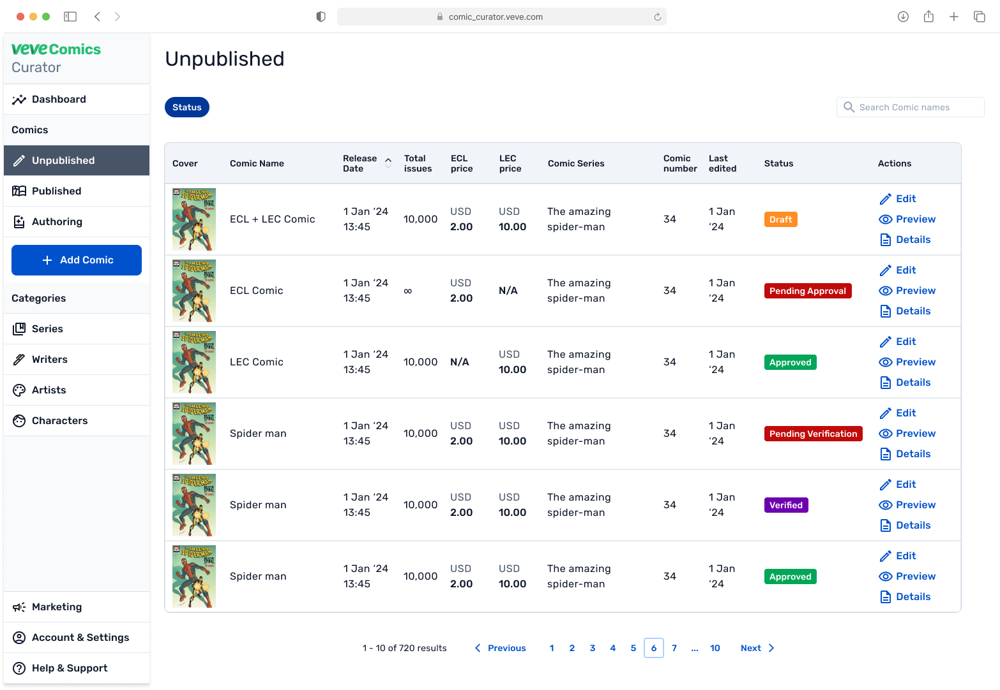
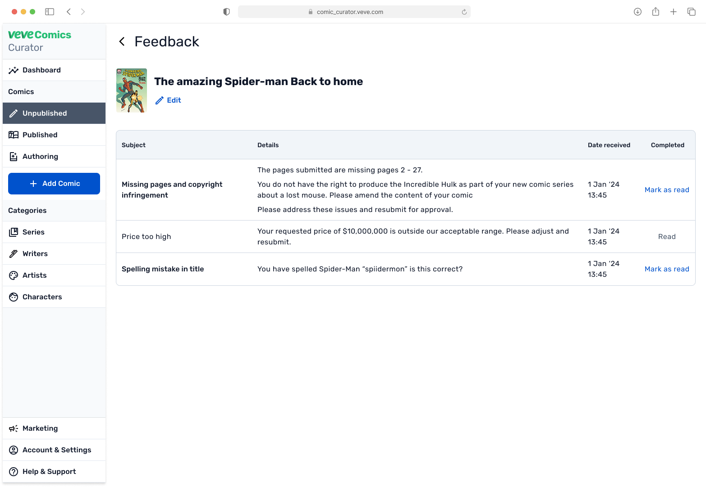
Approval states (Draft → Pending Approval → Approved) and the Feedback form that replaced Slack back-and-forth
The Categories Module
In the old tool, series, writers, artists, and characters were free-text fields inside individual comic records. "Stan Lee" and "Stanley Lee" and "S. Lee" coexisted across hundreds of comics. There was no canonical list, no way to browse by series, no linked data.
I designed four interconnected modules: Series, Writers, Artists, and Characters. Each is a standalone management view and a connected reference for the entire catalog.
The interaction works in both directions. When a publisher adds a comic and types a creator name, the form searches the Writers and Artists database. If the name exists, it links automatically. If it doesn't, they create a new entry inline — and it becomes available for every future comic. The comic form reads from taxonomy, and taxonomy grows from comic creation.
This is what elevated the Curator to a publishing platform. Publishers manage their catalog taxonomy in dedicated sessions — cleaning up names, organizing series, adding characters — and everything they create flows into the comic creation form automatically.
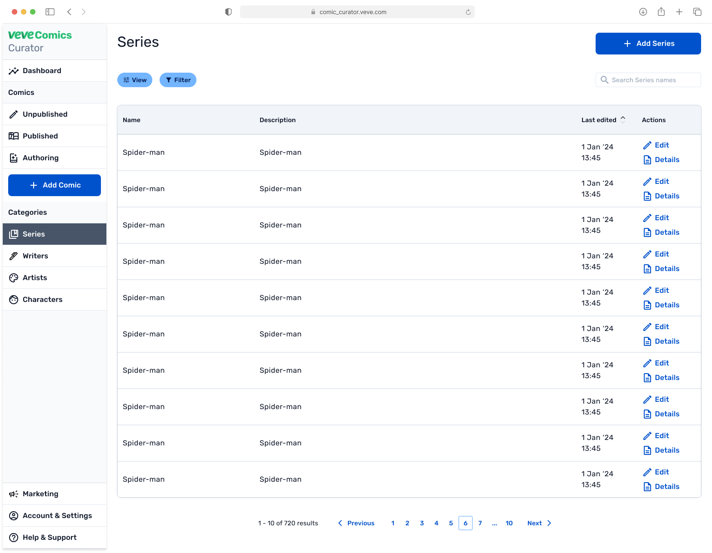
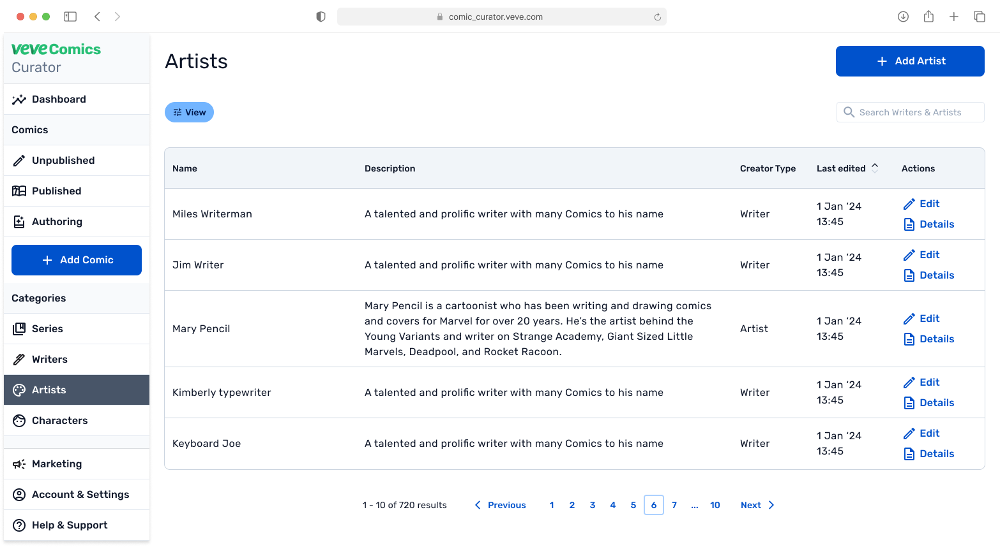
Categories module — Series, Writers, and Artists as first-class objects. Add once, link everywhere, one canonical spelling
The Authoring Workspace
VeVe comics are experienced one panel at a time with cinematic transitions. The Authoring section is where pages get separated into individual panels with a defined reading order.
This tool already existed in the old system through a completely separate interface. I brought it inside the Curator as a subsection under Comics. Same specialized workspace, same panel separation capabilities, now accessible without leaving the platform.
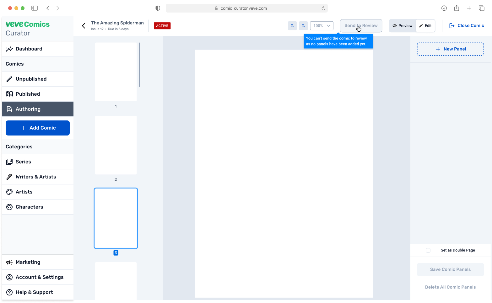
Authoring workspace — panel boundaries and reading order defined inside the Curator, no separate interface
Design System
I built a Figma design system covering components for forms, table cells, status badges, navigation, and modals. The table component was flexible enough to reuse across Unpublished, Published, Series, Writers, Artists, and Characters views. I defined layout templates for dashboard, table, and detail views, a consistent status color system, and responsive breakpoints. Engineering estimated it cut frontend development time by about 30%.
Usability Testing
We ran one round of unmoderated testing with 5 participants on UserTesting.com. The researcher recruited and set up sessions. I collaborated on the script and analyzed findings.
Three issues stood out, and I fixed each one.
The Excel template was invisible.
It was styled as an inline text link that users missed completely. I promoted it to a primary button at the top of the import section with a first-visit tooltip.
Feedback blended into the table.
The Feedback action looked identical to Edit, Preview, and Details. I added a distinct icon and a notification indicator for unread feedback so publishers could see which comics need attention.
Approval was too slow for batch review.
VeVe reviewers processing a queue of submissions wanted to approve directly from the list. I added a quick approval action in the table row for Pending Approval comics.
Results
Comic transaction volume grew about 8% in the months after launch. Reader engagement increased roughly 7% as the catalog diversified. Secondary market listings grew around 5%. Publisher retention was 100%, zero churn. The ops reduction gave publishers more autonomy and freed the internal team to focus on signing new partners.
Pending Approval became the most-used filter on the Unpublished page. Writers and Artists databases were accessed multiple times weekly by each publisher in standalone sessions. Pricing errors dropped significantly from the old 12% baseline. Internal review communication moved almost entirely from Slack to in-tool Feedback.
Reflections
Starting with IA was the right call for a problem rooted in information structure. One day of ops shadowing gave me outsized insight for the time invested. Quantifying the problem — 34% of tickets from metadata errors, 12% pricing mix-ups — earned stakeholder trust fast and accelerated decisions. The Categories module was my scope expansion: I identified the need through interviews, built the case, and got it approved. It became one of the most-used features.
If I did this again, I'd bring publishers into co-design during the IA phase. I'd push for a second testing round to validate fixes. I'd build in-app onboarding. And I'd test notification cadence before launch.
Next: AI-assisted panel detection in Authoring, a publisher analytics dashboard, enhanced approval workflows, and API access for enterprise integrations.
VeVe's readers will never see the Comics Curator. It's the reason the catalog grew from 35 to 190 comics a month, the reason 14 new publishers joined, and the reason hundreds of comics are managed in one unified tool.